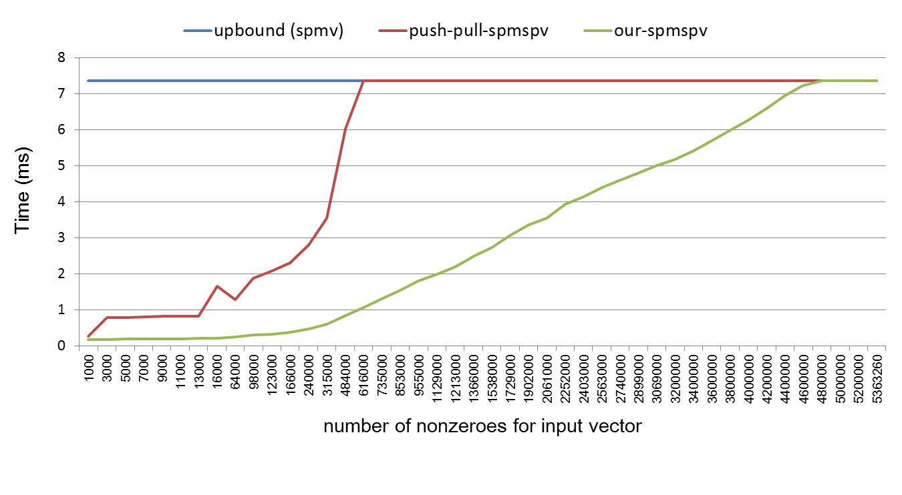

SpMspV (稀疏矩阵乘稀疏向量)
算法描述
, 其中是一个稀疏矩阵， 是一个稀疏向量，是结果向量。
存储格式
稀疏矩阵
稀疏矩阵采用CSC（Compressed Sparse Column）的存储格式。 CSC格式由3个数组组成：val, row_index, col_offset。 val 数组（长度为nnz）存储所有非零元的值。 row_index数组 （长度为nnz）存储所有非零元的行标。 col_offset (长度为n+1) 存储每一列的第一个非零元的在val数组中的下标。 Note：nnz代表稀疏矩阵非零元总数。n代表稀疏矩阵的列数。 如图1所示，详细展示了CSC存储格式信息。

稀疏向量
稀疏向量采用两个数组进行存储： x_key, x_val。 这两个数组的长度都为稀疏向量的非零元个数，记为x_nnz。 x_key 存储的是稀疏向量的非零元的下标。 x_val 存储的是稀疏向量的所有非零元的值。
用法
// 在GPU上执行SpMspV
SpMspV(m, n, nnz, row_index, col_offset, val, x_nnz, x_key, x_val, y);
参数
m：稀疏矩阵的行数.n：稀疏矩阵的列数.nnz：稀疏矩阵的非零元个数.row_index：稀疏矩阵的所有非零元的行标.col_offset:稀疏矩阵的每一列的第一个非零元的在所有非零元中的下标.val：稀疏矩阵的所有非零元的值.x_nnz：稀疏向量的非零元个数.x_key:稀疏向量的非零元的下标，向量，长度为.x_val:稀疏向量的所有非零元的值，向量，长度为.y：结果向量，长度为.
性能
性能对比.


随输入向量的非零元个数的变化的性能情况（ljournal-2008数据集）.
